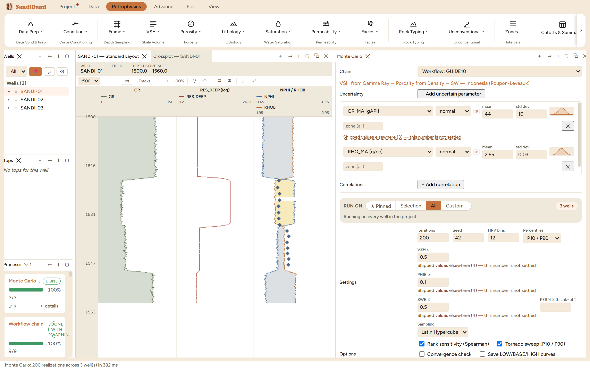
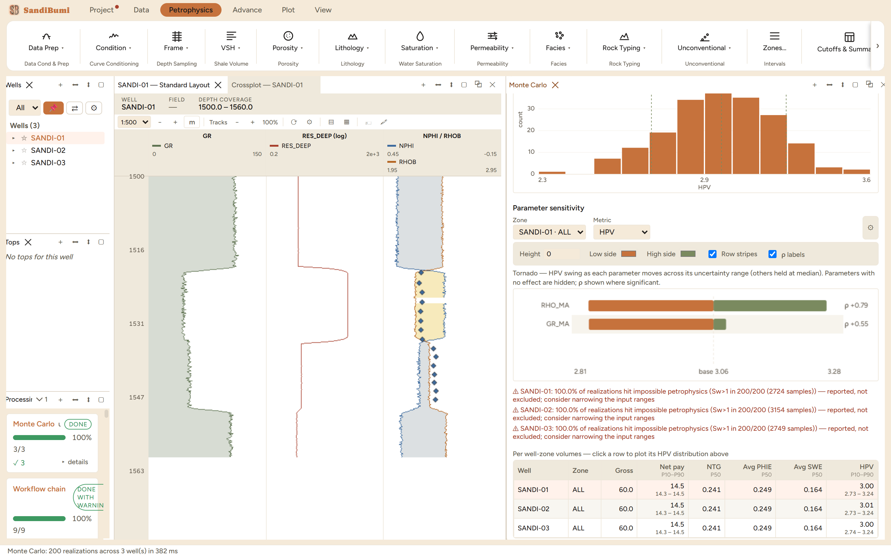

Monte Carlo answers "how sure are we" about the volumes a chain produces:
it re-runs a workflow many times with the uncertain parameters drawn from
distributions you declare, so that net, N:G, porosity, saturation and
hydrocarbon pore volume come back as percentile bands instead of single
numbers. Reach
for it when a deliverable needs P10/P50/P90 rather than one best estimate,
or when you want to know which parameter your answer actually depends
on.
The pane

The GUIDE10 chain with two uncertain parameters: matrix gamma
ray as normal 44 ± 10 gAPI and matrix density as normal
2.65 ± 0.03 g/cc, 200 iterations at seed 42, Latin Hypercube
sampling.
Chain picks the model: the built-in default sequence or any
saved workflow. The steps are shown so what is being perturbed is never
a guess.
Uncertain parameters are added one by one; each row picks the
parameter, a distribution (normal, uniform, triangular), and its
numbers, prefilled from the chain's own settled value so the base case
is the run you already accepted. A distribution glyph draws the shape,
and the same "Shipped values elsewhere" catalogue sits under each
row.
Settings: iterations, seed, HPV bins, the percentile pair to
report, the pay cutoffs, and the sampling scheme (Latin Hypercube, or
legacy random). A seeded run is exactly reproducible: the example's
numbers repeat to the last digit on a second run with seed 42.
Everything runs in memory; nothing is written to the project unless
the persist option is enabled.
Step by step
Open Petrophysics ▸ Batch ▸ Monte Carlo…,
pick the saved chain, and add the parameters you genuinely doubt with
honest spreads.
Set iterations and a seed, keep the cutoffs consistent with the pay
summary you will quote beside these numbers, and press
Run Monte Carlo. The example completes 200 realizations across
3 wells in 382 ms.
Click a result row to plot its HPV distribution, and read the tornado
below it.
Reading the result

The HPV histogram with P10/P90 markers, the tornado (matrix
density swings HPV from 2.81 to 3.28 around a base of 3.06,
rank correlation +0.79; matrix gamma ray +0.55), and the per-well
table: net pay 14.5 m (14.3–14.5), HPV P50 3.00
(2.73–3.24).
Two readings matter more than the percentiles themselves. First, the
tornado ranks the inputs: here HPV uncertainty is carried almost entirely by
matrix density, so tightening the gamma-ray endpoints would buy nothing.
Second, net pay barely moves (14.3–14.5 m) while HPV spreads
±8%: the sand is clean enough that the cutoff decision is insensitive,
and the volumetric uncertainty is a porosity story, which is exactly the
kind of sentence this pane exists to let you write.
Impossible physics is reported, never hidden. Each example well flags:
100.0% of realizations hit impossible petrophysics (Sw>1 in 200/200
(2724 samples)) — reported, not excluded; consider narrowing the input ranges
A draw of matrix density low enough makes computed porosity too small for
the measured conductivity somewhere in the wet interval, and saturation
exceeds one at those samples. The realizations still count (silently
dropping them would bias every percentile toward the comfortable draws),
and the warning tells you the input range is wider than the rock
supports.
QC and pitfalls
A seed is part of the study. Quote it with the results; an
unseeded run cannot be reproduced, so its percentiles cannot be
checked.
Distributions are claims, not knobs. A ±10 gAPI matrix
endpoint says something specific about how well the clean line is
known; widen it only because the data says so, not to make the band
look prudent.
Read the warnings before the percentiles. A high
impossible-physics fraction means the band partly measures the
distribution's tails, not the reservoir.